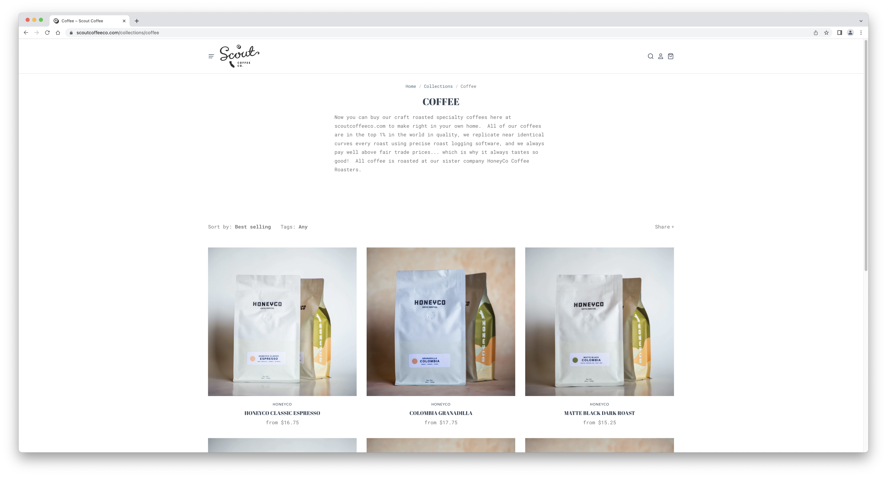
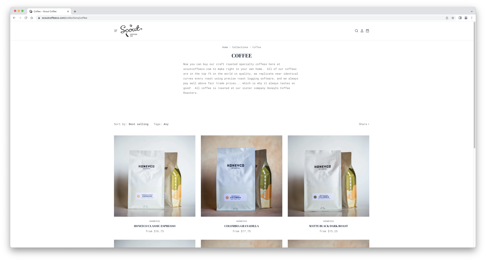
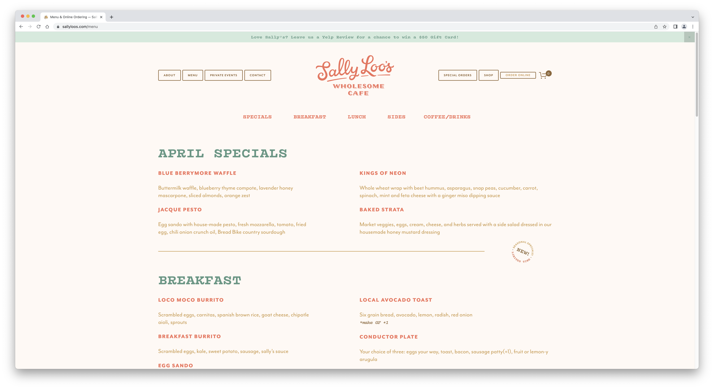
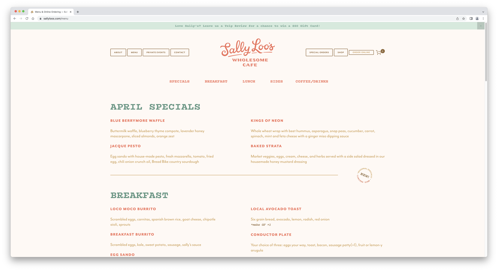
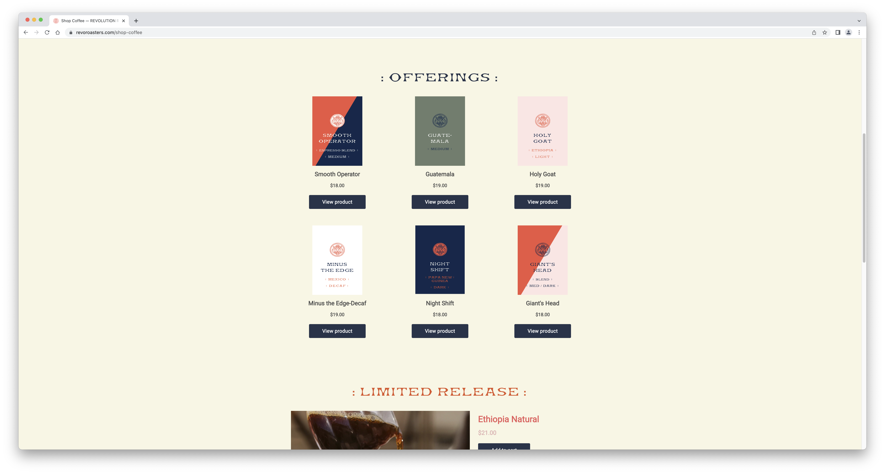

Final project proposal
Introduction
SLO Coffee Co.
SLO Coffee Co. is a local, non-profit coffee company committed to serving our community! They specialize in espresso and tea beverages.
Target audience
Visitors of this website will be looking online for our hours, location, as well as our menu.
Other reasons for visiting the website is to contact us by email or phone number, and to view our 'About Us' section.
Comparative analysis
Scout Coffee Co.
 

Sally Loo's Wholesome Cafe
https://www.sallyloos.com/shop
 

Revolution Roasters

Website content
Home
Here at SLO Coffee Co., we've been making happy coffee since the summer of 2017. The combination of our own daily scratch made pastries, craft roasted coffee, house made syrups & almond milk, beautiful spaces, our carefully curated boutiques, and service with a smile makes stepping into Scout a memorable and magical experience that is sure to brighten your day. In the time since opening, we've won "Best Coffee Shop" in both local polls every year, and have been written about by The New York Times, Sunset Magazine, The Guardian, Alton Brown, The Venue Report, AAA Westways Magazine, Sweet Paul, and many more. In 2017, we were awarded "Business of the Year" at the Capital for California's 35th Assembly District.
[Photo of latte art and a pastry.]
About
We are Jon & Sara Peterson, owners of SLO Coffee Co. We spent over 10 years dreaming, planning, learning and working in all things coffee with the hope that someday we would start a shop of our own. In July of 2017, we launched SLO Coffee Co. on Garden Street in Downtown San Luis Obispo. A year later, we rolled up the doors to our roasting company, HoneyCo Coffee Roasters. We now have over 40 wonderful employees, and love that you have made Scout one of the most sought after destinations on the Central Coast. Thank you so much to all of you who have made this possible. Our goal has always been to create inspiring spaces, with great people and amazing products, in a way that truly adds value to the community around us. We hope you love it here.
Please contact us at 805.456.9898 or at slocoffee@gmail.com
[Photo of the owners.]
Menu
- Cappuccino, A cappuccino is the perfect balance of espresso, steamed milk and foam, $4.25
- Latte, A latte is a shot or two of bold, tasty espresso with fresh, sweet steamed milk over it, $5.25
- Mocha, A mocha is our signature sweet chocolate coffee topped with whipped cream, $5.50
- Cold Brew, A cold brew is hndcrafted in small batches daily, slow-steeped in cool water for 20 hours, without touching heat, $4.25
- Americano, A americano is a caffeinated drink made with espresso and hot water, $2.50
- Chai Latte, A chai latte is black tea infused with cinnamon, clove and other warming spices is combined with steamed milk and topped with foam for the perfect balance of sweet and spicy., $5.50
- Matcha Latte, A matcha latte is smooth and creamy matcha sweetened just right and served with steamed milk, $6.25
- Seasonal Iced Tea, Our iced tea recipes mix fresh seasonal ingredients with our caffeinated green tea, $4.50
[Photo of each menu item.]
Location
SLO Coffee Co. at 1130 Garden Street is our beloved first location and is in the heart of downtown San Luis Obispo. As with most downtowns, parking can be limited on Garden Street, but you'll find metered street parking on all surrounding streets, and there's a parking garage located to the right off Marsh Street, just after passing Chorro Street and Founders Bank. This parking garage offers free parking for the first hour and is very reasonable beyond that. We also have bike parking available right on garden a few steps from our front door.
[Photo of the garden seating available.]